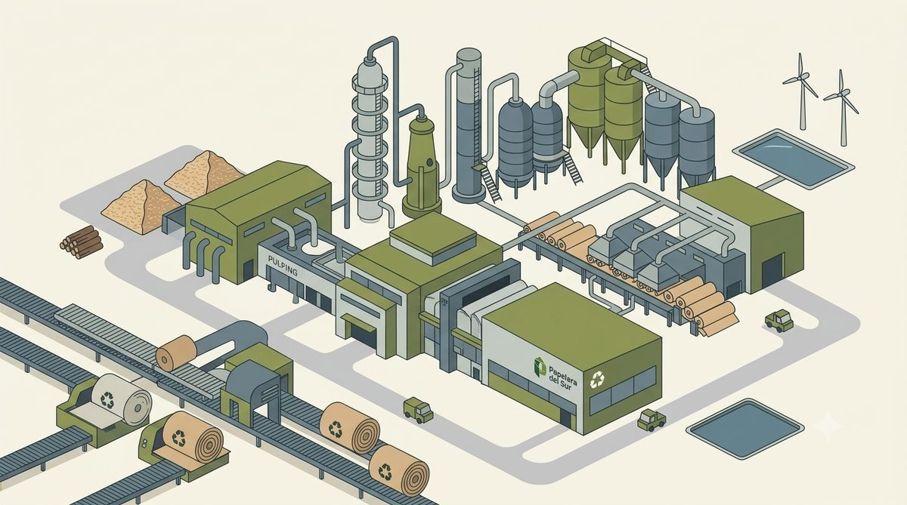

Elegí el sistema y cargá directamente ahí. Lo que registrás hoy es el accidente que no ocurre, la parada que se evita, y la causa raíz que no vuelve a repetirse.

Observaciones, actos y condiciones inseguras, incidentes, accidentes y eventos ambientales. Seguimiento de acciones y dashboard.
Entrar a EHS ⓘ Cómo funcionaNo es donde primero cargás algo — es el paso siguiente. Usalo cuando un problema se repite, cuando la parada fue larga, o cuando no tenés claro el motivo real. Te guía hasta la causa de fondo y de ahí genera la tarjeta TPM o el evento EHS correspondiente, ya vinculado al análisis.